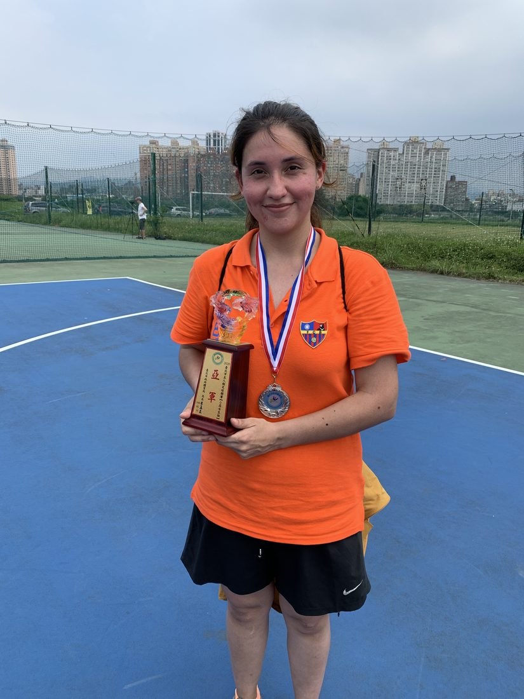
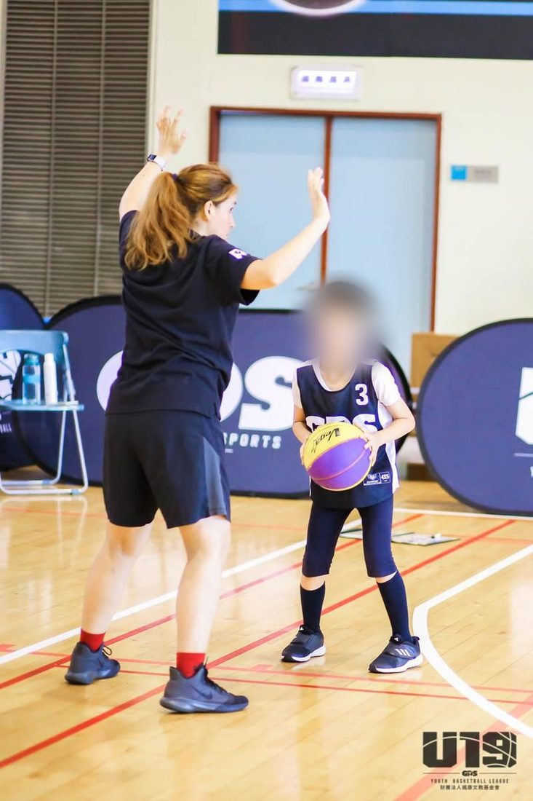
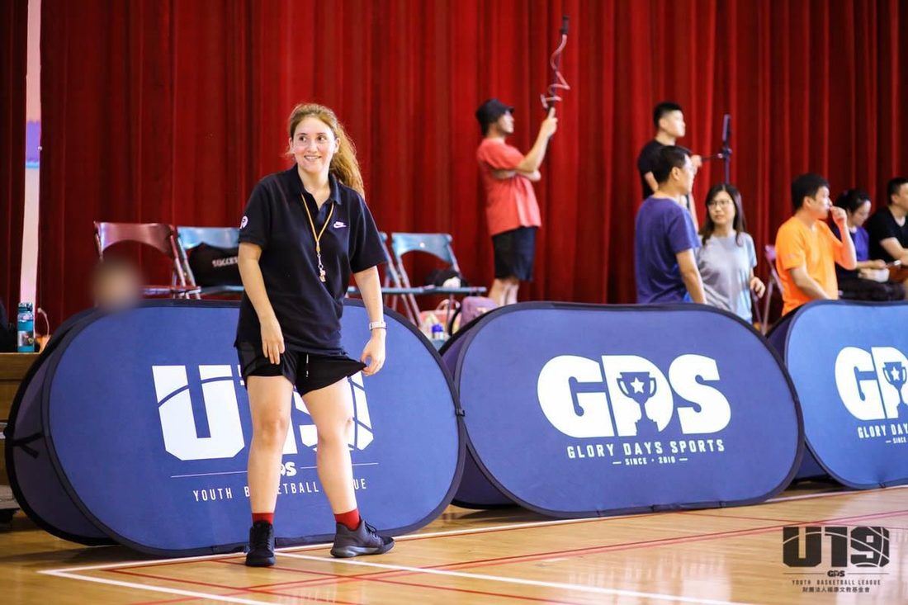

Computational linguist, Spanish instructor, and Ph.D. candidate at NTUST — I build the tools that decide how hard a text feels, and teach the humans reading it.Lingüista computacional, profesora de español y candidata a doctora en la NTUST. Construyo las herramientas que deciden qué tan difícil se siente un texto, y enseño a las personas que lo leen.計算語言學家、西班牙語教師,現為台灣科技大學博士候選人——我打造用來判斷文本難度的工具,也教導閱讀這些文本的人。
Where I'm headed: EdTech and health tech — language-learning tools that adapt to the reader, and patient-facing tools that make hard-to-see conditions legible. Academia stays firmly on the table; the teacher part never leaves.Hacia dónde voy: tecnología educativa y tecnología en salud: herramientas de aprendizaje de idiomas que se adaptan a quien lee, y herramientas para pacientes que hacen legibles las condiciones difíciles de ver. La academia sigue firmemente sobre la mesa; lo de profesora no se va nunca.我的方向:教育科技與醫療科技——打造能因應讀者調整的語言學習工具,以及讓難以被看見的疾病變得「可讀」的病患端工具。學術這條路仍穩穩在選項之中;而「老師」這個身分,從未離開。
Field:Área:領域:NLP × applied linguistics × language pedagogyPLN × lingüística aplicada × pedagogía del lenguaje自然語言處理 × 應用語言學 × 語言教學法Base:Base:所在地: Taipei, TaiwanStatus:Estado:身份:Ph.D. candidate, Digital Learning & Education, NTUSTCandidata a doctora, Aprendizaje Digital y Educación, NTUST台灣科技大學數位學習與教育研究所博士候選人
A1originsorígenes起源
Where this startedDónde empezó todo一切的起點
First-generation college graduate. B.A. in Letters (linguistics & Hispanic literature), Pontifical Catholic University of Chile — first published paper in 2019. B.Ed. in Secondary Education on a government Teacher's Vocation Scholarship, plus a year teaching in the U.S. (Union College, NY).
Licenciatura en Letras (mención en lingüística y literatura hispánica), Pontificia Universidad Católica de Chile (primer paper publicado en 2019). Licenciatura en Educación Media con Beca Vocación de Profesor del gobierno de Chile, más un año de docencia en EE.UU. (Union College, NY).
I'm part of the first generation in my family to go to university (except for my aunt Nery). With a lot of interest, and no small amount of difficulty, I earned a Licenciate in Letters, with a mention in linguistics and Hispanic literature, at the Pontifical Catholic University of Chile (PUC). My parents always said education was the one inheritance they could give me. That stuck.
I'd always been interested in Japanese, Chinese, and Korean culture, so I took the chance to minor in Asian Studies and join the Study Club Asia. That's where I made my first close friendships with people from Hong Kong, Taipei, Tokyo, Incheon, and elsewhere.
Making the most of those opportunities, I co-organized an international seminar on Korean studies, placed 4th in a national essay on Korea, and (funding the trip myself with a part-time job) spent a summer studying Korean at Seoul National University.
Learning Korean was deeply satisfying and opened up new interests and dreams for me. Sadly, I haven't been able to keep advancing my Korean since, but it's a dream I haven't given up on.
My undergraduate thesis grew out of a small moment: my Asian friends became my first students. And among the many questions they asked, like why Spanish articles (el, la, un, una…) were so hard to get right, I often didn't have a satisfying answer. So I researched it. The result, "Uso y adquisición de artículos en español como segunda lengua," was published in Logos: Revista de Lingüística, Filosofía y Literatura in 2019, co-written with my advisor, Dra. Gloria Toledo. I finished the underlying research while recovering from a car accident, which taught me early on that research is one of the few things that travels well through a hard year.
A second degree, in Educación Media (secondary education), came with a Teacher's Vocation Scholarship from the Chilean government, while I also completed a Diploma in Teaching Spanish as a Foreign Language on a scholarship as the diploma's teaching assistant. After that, a year at Union College in New York as a language assistant was where I first started experimenting with technology (VR included) in the language classroom.
Soy parte de la primera generación de mi familia en ir a la universidad (excepto por mi tía Nery). Con gran interés y dificultad saqué la Licenciatura en Letras, mención en lingüística y literatura hispánica, en la Pontificia Universidad Católica de Chile (PUC). Mis padres siempre dijeron que la educación era la única herencia que podían darme. Eso se quedó conmigo.
Siempre tuve interés en las culturas de Japón, China y Corea, por lo que aprovecheé de sacar un minor en Estudios Asiáticos, y a ser parte del Study Club Asia. Allí conocí a mis grandes primeras amistades de Hong-Kong, Taipei, Tokio, Incheon, entre otros.
Aprovechando las oportunidades, puede co-organizar un seminario internacional de estudios coreanos, obtener el 4º lugar en un ensayo nacional sobre Corea, y (financiando el viaje con un trabajo de medio tiempo) pasar un verano estudiando coreano en la Universidad Nacional de Seúl.
Aprender coreano fue muy satisfactorio y me abrió nuevos intereses y sueños. Tristemente no he podido avanzar en mi nivel de coreano, pero es un sueño al que no renuncio.
Mi tesis de pregrado nació de un momento pequeño: mis amigos asiáticos fueron mis primeros alumnos. Y entre preguntas y preguntas, como por qué los artículos en español (el, la, un, una…) eran tan difíciles, muchas veces yo no tenía una respuesta satisfactoria. Así que investigué. El resultado, "Uso y adquisición de artículos en español como segunda lengua", se publicó en Logos: Revista de Lingüística, Filosofía y Literatura en 2019, junto a mi profesora guía, la Dra. Gloria Toledo. Terminé esa investigación mientras me recuperaba de un accidente automovilístico, lo que me enseñó temprano que la investigación es de las pocas cosas que acompañan bien un año difícil.
Una segunda licenciatura, en Educación Media (o secundaria), vino con una Beca Vocación de Profesor del gobierno de Chile mientras sacaba el Diplomado de Enseñanza de Español como Lengua Extrajera con una beca como asistente del diplomado. Después, un año en Union College, en Nueva York, como asistente de idioma, fue donde empecé a experimentar con tecnología (incluyendo VR) en la sala de clases.
我的大學畢業論文源自一個很小的契機:我的亞洲朋友們成了我最早的學生。在他們接連不斷的提問中,例如為什麼西班牙語冠詞(el、la、un、una…)這麼難掌握,我常常答不出令人滿意的答案。於是我開始研究這個問題。研究成果〈西班牙語冠詞作為第二語言的使用與習得〉於2019年發表於《Logos: Revista de Lingüística, Filosofía y Literatura》,與指導教授Gloria Toledo博士合著。我是在一場車禍恢復期間完成這項研究的,這讓我很早就明白:研究是少數能陪你撐過艱難一年的事物之一。
That teacher's-vocation scholarship didn't end at graduation — it turned into eighteen classrooms across three countries.
Esa beca de vocación de profesor no terminó con la titulación. Se convirtió en dieciocho salas de clases en tres países.
那筆教師志業獎學金並沒有隨畢業而結束——它變成了橫跨三個國家、共十八個教學職位的經歷。
A2teachingdocencia教學
One classroom at a timeUn salón de clases a la vez一間教室,一次一堂課
Before "researcher" was on the business card, "teacher" was — and still is. Spanish, English, kids, adults, DELE candidates, exchange students, mining engineers learning survival Spanish: I've taught most of it, across three countries.
Antes de que "investigadora" apareciera en la tarjeta de presentación, ya decía "profesora", y todavía lo dice. Español, inglés, niños, adultos, candidatos al DELE, estudiantes de intercambio, ingenieros de minería aprendiendo español de supervivencia: he enseñado casi de todo, en tres países.
18 teaching roles across Chile, the U.S., and Taiwan (2015–present): K-12, adult education, DELE exam prep, corporate language training, and an EMI Teaching Assistantship at NTUST (Best Tutor award, 2021).
18 puestos de docencia en Chile, EE.UU. y Taiwán (2015–presente): K-12, educación de adultos, preparación DELE, formación corporativa de idiomas, y ayudantía EMI en la NTUST (premio Best Tutor, 2021).
2021NTUST — EMI Teaching Assistant · won Best Tutor award
2021–24Lion and Lion — Spanish & English Teacher, DELE B1/B2 prep (Taipei)
2023Lifelong Learning Center — English Storyteller (New Taipei)
2023–Gram — English Teacher, grades 1–6 (New Taipei)
2024–NTUST — Teaching Assistant, Applied Foreign Languages; helped bring ChatGPT into a Reading & Writing classroom
scroll for the full ledger — it's long on purpose
desplázate para ver la lista completa: es larga a propósito
捲動查看完整教學經歷——刻意保留完整清單
Off the pageFuera del papel紙上之外
Teaching was never only classrooms — though it was often those, in Chile and in Taiwan. It was also a post office in Santiago, where Japanese engineers hunted vocabulary through the stamp displays, and, for a few years, a soccer pitch and a basketball court.
Enseñar nunca fue solo salas de clases, aunque muchas veces lo fue, en Chile y en Taiwán. También fue un correo en Santiago, donde ingenieros japoneses buscaban vocabulario entre los sellos, y, por unos años, una cancha de fútbol y una de básquetbol.
Coaching soccer · FCBase TaiwanEntrenando fútbol · FCBase Taiwan足球教練・FCBase Taiwan

Second place — coaching season, TaipeiSegundo lugar, temporada como entrenadora, Taipéi亞軍——執教球季,台北

Basketball drills · Glory Days SportsEntrenamiento de básquetbol · Glory Days Sports籃球訓練・Glory Days Sports

Youth basketball league, TaipeiLiga juvenil de básquetbol, Taipéi青少年籃球聯賽,台北
Children’s faces are blurred on purpose. Consent matters more than a good photograph.
Los rostros de los niños están difuminados a propósito. El consentimiento importa más que una buena fotografía.
照片中孩子的臉部是刻意模糊處理的。取得同意,比拍到一張好照片更重要。
—readinglectura閱讀
What I'm readingQué estoy leyendo我在讀的書
A quick detour before the research gets technical: these are my reading profiles, on tools built by independent creators, not Amazon or Google. No sponsorship here, check them out if you're curious, it's genuine interest.
Un pequeño desvío antes de que la investigación se ponga técnica: estos son mis perfiles de lectura, en herramientas construidas por creadores independientes, no Amazon ni Google. Nada de esto es patrocinado, échales un vistazo si tienes curiosidad, es puro interés genuino.
Thousands of students later, one question kept resurfacing: why do some texts feel so much harder than others? That question became a dissertation.
Después de miles de estudiantes, una pregunta seguía apareciendo: ¿por qué algunos textos se sienten mucho más difíciles que otros? Esa pregunta se convirtió en una tesis doctoral.
What "readability" means in my handsQué significa "legibilidad" en mis manos「可讀性」在我手中的意義
Ph.D. candidate, Digital Learning & Education, NTUST. Dissertation builds a Spanish readability model (238 linguistic features, ~0.96 QWK, ~87% accuracy on 822 CEFR-labelled texts) and validates it against real learner perception. M.A. thesis (2020–2022) compared graded readers vs. authentic texts. Presented at 4 international venues; 1 publication, 1 in review, 2 more queued.
Candidata a doctora, Aprendizaje Digital y Educación, NTUST. La tesis construye un modelo de legibilidad en español (238 características lingüísticas, ~0.96 QWK, ~87% de precisión en 822 textos etiquetados según el MCER) y lo valida frente a la percepción real de aprendices. La tesis de maestría (2020–2022) comparó lecturas graduadas con textos auténticos. Presentada en 4 sedes internacionales; 1 publicación, 1 en revisión, 2 más en cola.
My doctoral dissertation, "Assessing Text Readability in Spanish as a Foreign Language: Computational Modelling and Human Judgment," is a two-study pipeline: build a model that grades Spanish text difficulty as reliably as a trained rater, then check whether real learners actually experience difficulty the way the model predicts.
Study 1 — a hybrid readability model
A specialized, CEFR-labelled corpus (graded readers and DELE exam passages) feeds a pipeline of 238 linguistic features across six families — lexical, syntactic, cohesion, traditional, morphological, vocabulary — extracted in part with three original tools, SpanishMorphAnalyzer, SpanishComplexityAnalyzer, and VocabFeatureExtractor. Linguistic feature-based models are compared head-to-head against transformer-based models (BETO, MarIA, BERTIN).
I also included six feature-selection methods voting on what actually matters, with collinearity pruning deliberately moved to after the tournament rather than before it. That said, the method wasn't more effective than L2 Synthesis feature selection.
Mi tesis doctoral, "Assessing Text Readability in Spanish as a Foreign Language: Computational Modelling and Human Judgment," es un proceso de dos estudios: construir un modelo que clasifique la dificultad de textos en español con la fiabilidad de un evaluador entrenado, y luego comprobar si los aprendices realmente experimentan esa dificultad como el modelo la predice.
Estudio 1: un modelo híbrido de legibilidad
Un corpus especializado, etiquetado según el MCER (lecturas graduadas y textos del examen DELE), alimenta un proceso de 238 características lingüísticas en seis familias (léxicas, sintácticas, de cohesión, tradicionales, morfológicas y de vocabulario), extraídas en parte con tres herramientas propias, SpanishMorphAnalyzer, SpanishComplexityAnalyzer y VocabFeatureExtractor. Los modelos basados en características lingüísticas se comparan directamente con modelos basados en transformers (BETO, MarIA, BERTIN).
Además, incluí seis métodos de selección de variables votando qué realmente importa, con la poda de colinealidad movida deliberadamente a después del torneo, no antes. Sin embargo, el método no fue más efectivo que L2 Synthesis feature selection.
The best model pairs BERTIN with CatBoost — the "BERTIN paradox": weakest model alone, strongest as a hybrid partner. This model uses 69 features, selected with L2 Synthesis feature selection, not the full 238 from the initial pipeline. It also holds up well against MultiAzterTest, the existing benchmark, beating it on CEFR discrimination while correlating strongly with it (ρ = 0.738).
Study 2 — does difficulty feel the way the model says it should?
Study 2 triangulates the model's predictions against real perceptions from Mandarin-L1 learners of Spanish, including affective variables like anxiety and engagement, and typological distance. Including affect required making a literature-backed case strong enough to survive real methodological pushback — not just asserting it belonged.
Before the Ph.D. — the master's
My M.A. in Applied Foreign Languages (NTUST, 2020–2022), advised by Dra. Sy-Ying Lee, asked a narrower version of the same question: are graded readers or authentic illustrated books better first material for beginning Spanish learners? A corpus analysis of verb variety, frequency, mood, and tense across both text types, plus a 12-week study with Taiwanese Spanish majors, became a 170-page manuscript — and the seed of everything since.
Presented at Edge Hill University (UK), Teachers College Columbia University, Westminster International University in Tashkent, and National Taipei University of Business. Two more papers on Study 1 & 2 are queued for the XII Congreso Internacional de la AAH.
Alongside all this, a handful of smaller but important milestones pulled me further into the computational side: Text Analytics with Python (edX, 2023), a Professional Python Diploma from PUC (2023), CS50x: Introduction to Computer Science (2023), and CS50's Introduction to Programming with Python (HarvardX, 2026).
El mejor modelo combina BERTIN con CatBoost, la "paradoja BERTIN": el más débil por sí solo, el mejor compañero en un híbrido. Este modelo usa 69 características, seleccionadas con L2 Synthesis feature selection, no las 238 completas del pipeline inicial. También supera a MultiAzterTest, el punto de referencia existente, superándolo en discriminación MCER mientras se correlaciona fuertemente con él (ρ = 0.738).
Estudio 2: ¿la dificultad se siente como dice el modelo?
El Estudio 2 triangula las predicciones del modelo con percepciones reales de aprendices de español con L1 mandarín, incluyendo variables afectivas como ansiedad y compromiso, además de la distancia tipológica. Incluir el factor afectivo exigió construir un argumento respaldado por la literatura lo suficientemente sólido para resistir un cuestionamiento metodológico real. No bastaba con afirmarlo.
Antes del doctorado: la maestría
Mi maestría en Lenguas Extranjeras Aplicadas (NTUST, 2020–2022), guiada por la Dra. Sy-Ying Lee, hizo una versión más acotada de la misma pregunta: ¿son mejores las lecturas graduadas o los libros ilustrados auténticos como primer material para principiantes de español? Un análisis de corpus sobre variedad, frecuencia, modo y tiempo verbal en ambos tipos de texto, más un estudio de 12 semanas con estudiantes taiwaneses de español, se convirtió en un manuscrito de 170 páginas, y la semilla de todo lo que vino después.
Presentado en Edge Hill University (Reino Unido), Teachers College de Columbia University, Westminster International University en Taskent, y National Taipei University of Business. Dos ponencias más sobre los Estudios 1 y 2 están programadas para el XII Congreso Internacional de la AAH.
En paralelo a todo esto, otros hitos más pequeños pero importantes me fueron acercando al área computacional: Text Analytics with Python (edX, 2023), un Diplomado en Python Profesional de la PUC (2023), CS50x: Introduction to Computer Science (2023), y CS50's Introduction to Programming with Python (HarvardX, 2026).
曾於英國Edge Hill University、哥倫比亞大學Teachers College、塔什干Westminster International University、國立臺北商業大學發表。另有兩篇分別探討研究一與研究二的論文,已投稿至第十二屆亞洲西班牙語學者協會(AAH)國際大會。
與此同時,還有幾個規模較小、但同樣重要的里程碑,把我進一步帶向電腦運算領域:Text Analytics with Python(edX,2023年)、PUC的專業Python文憑課程(2023年)、CS50x: Introduction to Computer Science(2023年),以及HarvardX的CS50's Introduction to Programming with Python(2026年)。
Publications & reviewingPublicaciones y revisión académica著作與學術審查
Spanish Graded Readers vs. Authentic Illustrated Texts
Co-authored with Sy-Ying Lee. In active revision for the journal System, after an earlier round at Reading in a Foreign Language.
Coescrito con Sy-Ying Lee. En revisión activa para la revista System, tras una ronda anterior en Reading in a Foreign Language.
與李思穎(Sy-Ying Lee)合著,目前正在為期刊《System》進行修訂,先前曾投稿至《Reading in a Foreign Language》。
Uso y adquisición de artículos en español como segunda lengua
Valenzuela & Toledo (2019). Logos: Revista de Lingüística, Filosofía y Literatura, 29(2), 268–285.
Valenzuela y Toledo (2019). Logos: Revista de Lingüística, Filosofía y Literatura, 29(2), 268–285.
Valenzuela與Toledo(2019)。刊於《Logos: Revista de Lingüística, Filosofía y Literatura》,29(2),268–285頁。
I also review for Revista Literatura y Lingüística (since 2022). From 2020 to 2026, until AI translation tools made the role redundant, I volunteered as a proofreader and English–Spanish translator for The Ehlers-Danlos Society, working on academic medical papers about EDS — see the honest part for what came after.
También reviso artículos para Revista Literatura y Lingüística (desde 2022). Desde 2020 hasta 2026, hasta que las herramientas de IA volvieron redundante ese rol, colaboré como correctora y traductora inglés–español para The Ehlers-Danlos Society, trabajando en artículos académicos médicos sobre el SED (ver la parte honesta para lo que vino después).
此外,我自2022年起為《Revista Literatura y Lingüística》期刊審稿。從2020年到2026年,直到AI翻譯工具讓這個角色變得多餘為止,我擔任The Ehlers-Danlos Society的英西文校對與翻譯志工,協助翻譯關於EDS的學術醫學論文——後續發展請見誠實的部分。
A short detour before the project list — the same instinct that drives the readability research, applied to something you can play with in ten seconds.
Un pequeño desvío antes de la lista de proyectos: el mismo instinto detrás de la investigación de legibilidad, aplicado a algo con lo que puedes jugar en diez segundos.
在專案列表之前的一段小插曲——與可讀性研究背後同樣的直覺,用一個十秒鐘就能上手的小遊戲呈現。
▶playjuega來玩
Whose name is it, anyway?¿De quién es este nombre?這是誰的名字?
An interactive demo built on the NAS project (see Projects below) — a system for handling diverse name structures in software. Optional; skip straight to Projects if you'd rather.
Una demostración interactiva basada en el proyecto NAS (ver Proyectos más abajo), un sistema para manejar la diversidad de estructuras de nombres en el software. Opcional; puedes ir directo a Proyectos si prefieres.
Six names, six ways software gets them wrong. Guess how each one is really built — starting with the two I signed this page with. There is a reason I write my name the way I do; by the end you will have it.
Seis nombres, seis formas en que el software se equivoca con ellos. Adivina cómo está construido cada uno, empezando por los dos con los que firmé esta página. Hay una razón por la que escribo mi nombre así; al final la vas a tener.
Research doesn't stay in papers if I can help it — most of it turns into a tool, a site, or an app.
Si depende de mí, la investigación no se queda solo en papers. Casi todo termina convirtiéndose en una herramienta, un sitio o una app.
只要能力所及,我的研究不會只停留在論文裡——大多數最後都會變成一項工具、一個網站,或一款應用程式。
The Carla Model
A hybrid architecture behind Study 1 — traditional linguistic features fused with transformer embeddings, on a cleaned custom corpus of 800+ Spanish texts. Building this gave me the technical confidence to start other projects, like ZebraUp, below.
La arquitectura híbrida detrás del Estudio 1: características lingüísticas tradicionales combinadas con embeddings de transformers, sobre un corpus propio y depurado de más de 800 textos en español. Construir esto me dio la confianza técnica para empezar otros proyectos, como ZebraUp, más abajo.
Built as an mHealth web app for people navigating rare or hard-to-diagnose conditions — the "zebras," in medical slang, that get overlooked while clinicians look for more common explanations. ZebraUp helps patients walk into short consultations with concrete data instead of a blurred memory of symptoms: structured symptom tracking, a timeline they can hand to a new specialist, and language built around how patients actually describe what's happening to them, not just clinical checklists.
I'm currently gathering structured data on how patients with complex, multi-system conditions communicate with their care teams — where that communication breaks down, and what actually helps — with the aim of publishing a study that uses ZebraUp as its case study. More on why I built this in the honest part.
Construida como una app web de salud móvil para personas que navegan condiciones raras o difíciles de diagnosticar (las "cebras", en la jerga médica, que quedan sin ver mientras los clínicos buscan explicaciones más comunes). ZebraUp ayuda a los pacientes a llegar a consultas breves con datos concretos en vez de un recuerdo difuso de sus síntomas: seguimiento estructurado de síntomas, una línea de tiempo que pueden entregar a un nuevo especialista, y un lenguaje construido a partir de cómo los pacientes realmente describen lo que les pasa, no solo listas clínicas de verificación.
Actualmente estoy recopilando datos estructurados sobre cómo se comunican con sus equipos médicos las personas con condiciones complejas y multisistémicas (dónde se rompe esa comunicación y qué realmente ayuda), con el objetivo de publicar un estudio que use ZebraUp como caso de estudio. Más sobre por qué construí esto en la parte honesta.
The answer to the game above. A system built to acknowledge and respect diverse name structures and preferences — because most software still assumes everyone's name fits one Western template.
La respuesta al juego de más arriba. Un sistema diseñado para reconocer y respetar la diversidad de estructuras y preferencias en los nombres de las personas, porque la mayoría del software todavía asume que todos los nombres encajan en un solo modelo occidental.
An extensive-reading initiative and the site that hosts it, plus a stint as EdTech Project Contributor for The Other Way Spanish, building the same idea into a community reading club.
Una iniciativa de lectura extensiva y el sitio que la aloja, además de un período como Contribuidora de proyecto EdTech para The Other Way Spanish, llevando la misma idea a un club de lectura comunitario.
一項廣泛閱讀計畫,以及承載這項計畫的網站;此外我也曾擔任The Other Way Spanish的EdTech專案貢獻者,將同樣的理念延伸為一個社群式讀書會。
FlaskPythonEdTechExtensive ReadingCommunity Building
Tone StampTone StampTone Stamp
A reading tool for learners of Chinese that colors characters to make components, radicals, or pronunciation patterns visible at a glance — the same instinct behind my Spanish readability work, aimed at a language I'm still learning myself.
Una herramienta de lectura para estudiantes de chino que colorea los caracteres para hacer visibles a simple vista sus componentes, radicales o patrones de pronunciación, el mismo instinto detrás de mi trabajo de legibilidad en español, aplicado a un idioma que yo misma sigo aprendiendo.
Not everything below has shipped yet. These are the ones still living mostly in my head.
No todo lo de abajo está terminado. Estas son las ideas que todavía viven, sobre todo, en mi cabeza.
以下這些還沒有真正完成。它們大多還活在我腦子裡。
?dream projectsproyectos soñados夢想中的專案
Draft v.1.0 — in my head, oftenTodavía no construidos, pero rondando mi cabeza seguido還沒動工——但常常在我腦中盤旋
Two concepts, both still in my head: leehzn, a graded Spanish-reading platform for Korean/Chinese/Japanese speakers, and El Vecindario, a visual-novel Spanish-learning game built around active production and zero-punishment failure.
Dos conceptos, ambos todavía en mi cabeza: leehzn, una plataforma de lectura graduada en español para hablantes de coreano, chino y japonés, y El Vecindario, un juego de aprendizaje de español estilo novela visual, centrado en la producción activa y el error sin castigo.
Ideas I keep coming back to, in various stages of "not real yet." Listed here so I stay honest about the gap between dreaming them and shipping them.
Ideas a las que sigo volviendo, en distintos grados de "todavía no son reales." Las dejo acá para ser honesta sobre la distancia entre soñarlas y construirlas.
A graded Spanish-reading platform built specifically for Korean, Chinese, and Japanese speakers — contrastive grammar explained from each native language, levels calibrated with my own CARLA readability model, real Latin American Spanish from day one.
Una plataforma de lectura graduada de español construida específicamente para hablantes de coreano, chino y japonés: gramática contrastiva explicada desde cada lengua materna, niveles calibrados con mi propio modelo de legibilidad CARLA, español latinoamericano real desde el primer día.
A visual-novel Spanish-learning game designed against the "streak trap" — no health bars, no game over. Vocabulary is acquired by dragging mystery words onto context, not translation; sentences are built from word-blocks to force active production instead of multiple choice. Starts in a soft-landing family home (A1) and expands into a full neighborhood — market, deliveries, a lost-internet crisis — through A2.
Un juego de aprendizaje de español estilo novela visual, diseñado contra la "trampa de la racha": sin barras de vida, sin Game Over. El vocabulario se adquiere arrastrando palabras misteriosas hacia el contexto, no hacia una traducción; las frases se construyen con bloques de palabras para forzar la producción activa en vez de la simple selección múltiple. Empieza en un aterrizaje suave en casa de familia (A1) y se expande a todo un vecindario (mercado, delivery, una crisis sin internet) hasta A2.
LSA — Linguistic Society of AmericaASELE: enseñanza del español como lengua extranjera
None of this happened as smoothly as it reads so far. Here's the part usually left out.
Nada de esto ocurrió tan sin problemas como se lee hasta ahora. Esta es la parte que normalmente se omite.
以上這一切,都不像讀起來那樣順利。以下是通常被省略的部分。
C1the honest partla parte honesta誠實的部分
The messy middleEl proceso desordenado混亂的中間過程
6 scholarships took me from Chile to South Korea, New York, and Taiwan. Stopped competitive coaching due to Ehlers-Danlos Syndrome, and later saw AI make my Ehlers-Danlos Society volunteer translation work redundant — both experiences led directly to ZebraUp. Also navigating a job market where formal training competes with untrained native speakers and AI-assisted work.
6 becas me llevaron de Chile a Corea del Sur, Nueva York y Taiwán. Dejé de entrenar de forma competitiva por el Síndrome de Ehlers-Danlos. Más tarde, la IA volvió redundante mi trabajo voluntario de traducción para la Ehlers-Danlos Society. Ambas experiencias llevaron directamente a ZebraUp. También navego un mercado laboral donde la formación formal compite con hablantes nativos sin entrenamiento y trabajo asistido por IA.
A live CV usually hides the parts that weren't smooth. Here's some of what actually got me here.
Nobody in my family had a map for any of this, so I've drawn most of it myself, one scholarship application at a time. Six of them, so far, got me from Chile to South Korea to New York to Taiwan.
Chronic illness has its own tax here. Real medical support for a connective-tissue condition is hard to find anywhere, and harder still in Taiwan — finding specialists who actually understand it has been its own separate fight. Steady work hasn't been simple either: in Taiwan, any native Spanish speaker can end up teaching Spanish with no training or credentials required, and now, anyone with access to AI can write enough code to pass for the work being done. It's hard not to feel years of training counting for less every year.
For a while, coaching was part of the plan too. Then Ehlers-Danlos Syndrome made that impossible — a connective-tissue condition that, after years of frustration and one knee injury too many, meant I had to stop coaching soccer and basketball for good. I even trained and earned a Football Statistician Certificate (Genius Sport, 2024), to stay near the game from the sidelines and report matches around Taiwan — but my body wouldn't cooperate with that either. That long, exhausting fight to be heard about my own health is exactly what became ZebraUp. More recently, AI tools made my volunteer translation work for the Ehlers-Danlos Society redundant — that one stung, honestly — but it's part of what pushed me to put that energy fully into ZebraUp instead.
I also completed the Be There Certificate (Born This Way Foundation, 2023), on how to support someone through a mental health crisis.
And underneath all of it: the scholarship funding my studies in Taiwan covers five years total. I used two for the master's and three for the Ph.D., so the funding has run out. I need support. If you've read this far and think what I'm building is worth backing, that's genuinely the most useful thing you can do next.
Un CV en vivo normalmente esconde las partes que no fueron fáciles. Esto es parte de lo que realmente me trajo hasta aquí.
Nadie en mi familia tenía un mapa para nada de esto, así que he ido dibujando el mío, una postulación a beca a la vez. Seis becas, hasta ahora, me han llevado de Chile a Corea del Sur, a Nueva York y a Taiwán.
La enfermedad crónica tiene su propio costo aparte. El apoyo médico real para una condición del tejido conectivo es difícil de encontrar en cualquier parte, y más difícil todavía en Taiwán. Encontrar especialistas que de verdad la entiendan ha sido su propia pelea. Encontrar trabajo estable tampoco ha sido simple: en Taiwán, cualquier persona que hable español como lengua materna puede terminar enseñando español sin necesidad de formación ni credenciales, y ahora, cualquier persona con acceso a IA puede escribir suficiente código como para que el trabajo parezca hecho. Cuesta no sentir que los años de formación pesan cada vez menos.
Por un tiempo, entrenar también fue parte del plan. Luego el Síndrome de Ehlers-Danlos lo hizo imposible (una condición del tejido conectivo que, tras años de frustración y una lesión de rodilla de más, me obligó a dejar de entrenar fútbol y básquetbol para siempre). Incluso me formé y obtuve un Football Statistician Certificate (Genius Sport, 2024), para seguir cerca del juego desde la banca y reportar partidos por Taiwán. Pero mi cuerpo tampoco cooperó con eso. Esa lucha larga y agotadora por ser escuchada sobre mi propia salud es exactamente lo que se convirtió en ZebraUp. Hace poco, herramientas de IA volvieron redundante mi trabajo voluntario de traducción para la Ehlers-Danlos Society (eso me dolió, honestamente), pero también fue parte de lo que terminó de empujarme a poner esa energía por completo en ZebraUp.
También completé el Be There Certificate (Born This Way Foundation, 2023), sobre cómo acompañar a alguien que atraviesa una crisis de salud mental.
Y bajo todo esto: la beca que financia mis estudios en Taiwán cubre cinco años en total. Usé dos para la maestría y tres para el doctorado, así que ya no tengo beca. Necesito apoyo. Si llegaste hasta aquí leyendo y crees que lo que estoy construyendo vale la pena apoyar, eso es, honestamente, lo más útil que puedes hacer a continuación.
Work with me, or back this workTrabaja conmigo, o apoya este trabajo與我合作,或支持這項研究
I'm open to collaborations on open-source NLP and linguistics projects — especially anything touching language learning or teaching. If a role, a project, or a partnership sounds like a fit, I'd love to hear from you.
Estoy abierta a colaborar en proyectos de PLN y lingüística de código abierto, especialmente si tienen que ver con el aprendizaje o la enseñanza de idiomas. Si un puesto, un proyecto o una colaboración calzan, me encantaría saber de ti.
Support the research directlyApoya la investigación directamente直接支持這項研究
Independent, technical doctoral research runs on time most people don't get paid for. If this work is useful to you or you just want to see it keep going, a small contribution goes further than it might seem.
La investigación doctoral independiente y técnica se sostiene con tiempo que la mayoría de las personas no cobra. Si este trabajo te es útil, o simplemente quieres que siga adelante, un aporte pequeño rinde más de lo que parece.